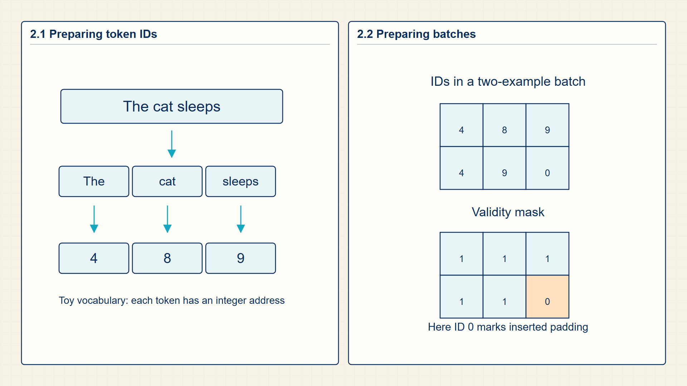
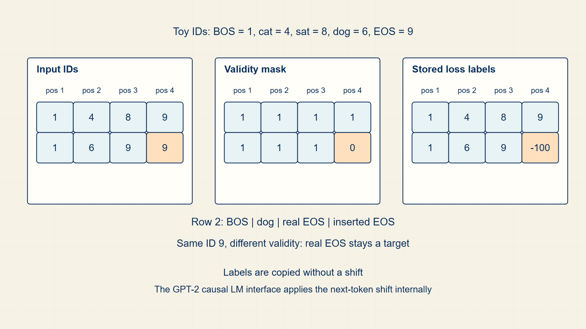

2 Token IDs: Discretizing Text into Numbers and Batches
Models calculate with numbers rather than character strings. A tokenizer and vocabulary provide the integer IDs that make text available to later tensor operations.
A tokenizer turns text into integer addresses, and batching turns several unequal sequences into one rectangular array. Padding and attention masks preserve the difference between real tokens and added empty positions.
In code, transformers.AutoTokenizer returns input_ids and attention_mask; torch.tensor stores the padded integer batches used by later models.

2.1 Discretizing Strings into Fixed Vocabulary Indices
The vocabulary is the finite set of symbols that the model can name directly. It is the first place where language becomes a discrete mathematical object.
- Token: A symbol emitted by a tokenizer: a character, word, subword, special marker, or domain token.
- Vocabulary: The set of tokens with assigned integer IDs.
- Special token: A control symbol such as beginning-of-sequence (BOS), end-of-sequence (EOS), padding (PAD), mask (MASK), unknown (UNK), or a chat-role marker.
- Unknown token: A fallback symbol for an item not represented by the vocabulary.
A vocabulary fixes the output dimension of a language model. If |V| is 50,000, the final language-model head produces 50,000 logits at each predicted position.
Tokenization choices change both computation and evaluation. A bad tokenizer can split domain terms, Hebrew words, code identifiers, or biomedical strings into unhelpful fragments, increasing sequence length and making the model spend capacity on reconstructing symbols.
Different sequence lengths create the next batching problem. Tokenization turns text into rows of IDs, but dense tensor operations need one rectangular batch. Padding and masks provide that rectangular representation while preserving which positions contain real tokens.
A vocabulary fixes both the legal integer range and the width of a language model’s output distribution. The same token that is stored as an integer ID is later used to select an embedding row and to identify the correct output logit during training.
A single sequence is naturally one-dimensional, but a training step usually processes several sequences together. The batch dimensions therefore record two different facts: how many examples are present and how many token positions have been reserved for each example.
The vocabulary is a finite indexed set.
Vocabulary:
\[ V = \{v_0,\ldots,v_{\lvert V\rvert-1}\} \tag{2.1}\]
where V is finite vocabulary; |V| is number of token types.
A model cannot assign a score to an unbounded set of arbitrary strings. The tokenizer first restricts the possible symbols to a finite vocabulary and assigns each symbol one index. Once the legal token IDs are exactly 0 through |V|-1, the language-model output can use one coordinate per vocabulary item. That is why the vocabulary size becomes the width of the next-token logit vector.
Vocabulary size fixes two objects at once: the legal token-ID range and the width of the next-token logit vector.
After tokenization, each position stores an integer ID.
ID sequence:
\[ x_t = \operatorname{id}(t_t) \tag{2.2}\]
where \(x_{t}\) is token ID at position t; id is vocabulary lookup map.
The tokenizer emits token strings, but embedding lookup and loss functions operate on integer coordinates. The ID map is a function from each token string in the vocabulary to its row or output coordinate. Applying that function position by position converts the token string sequence into an integer sequence with the same order and length.
The token strings are still recoverable through the vocabulary, but the model computation starts from integer IDs.
A token-ID batch stores integer coordinates with one batch axis and one sequence axis.
where B is number of sequences processed together; T is reserved token positions per sequence after padding or truncation; X is integer token-ID array with one sequence per row.
Place each tokenized sequence in one row. When every row has T positions, stacking B rows produces a rectangular array with B by T integer entries.
Embedding lookup consumes this rectangular ID array and adds a vector dimension to every token position.
Example: Turning Symbols into IDs
Vocabulary:
If V = {‘
ID sequence:
If \(id('cat') = 1\) and \(id('sat') = 2\), then ‘cat sat’ becomes \(x = (1, 2)\).
Batch dimensions:
For \(B=2\) and \(T=4\), the tensor \(X\) contains eight integer positions arranged in a \(2 \times 4\) array.
Token IDs are stable addresses in a vocabulary, not numerical measurements of meaning. Batches require several ID sequences to share a common rectangular layout.
2.2 Formatting Ragged Sequences for Batch Processing
A padded batch is the rectangular token-ID tensor created when tokenized examples have different sequence lengths. We need it because matrix operations, embedding lookup, attention masks, and loss functions process a mini-batch as one array with fixed dimensions, while natural sentences rarely contain the same number of tokens.
- Input IDs: The integer tensor containing vocabulary IDs after padding or truncation.
- Attention mask: A binary tensor that marks real tokens with 1 and padding positions with 0.
- Ignored label: A target value such as -100 that tells a loss implementation not to train on that position.
Padding solves a tensor-dimension problem at the boundary between text and numerical computation. Without padding, each example would have its own length, so a batch would be a list of uneven rows rather than a single two-dimensional tensor. Padding adds a special PAD token to shorter rows, then the attention mask records which coordinates are real tokens and which coordinates were inserted only to make the batch rectangular.
For two tokenized examples, [BOS, the, cat, EOS] and [BOS, dog, EOS], padding to length four gives input_ids with dimensions [2,4]. The second row receives one PAD token and an attention-mask value of 0 at that position.
The tokenizer performs the text-to-ID step before PyTorch sees the batch. AutoTokenizer returns ordinary integer IDs and a binary attention mask; later embedding and attention operations consume those tensors. Padding is therefore a representation decision at the boundary between a text library and the model computation.
The mask is computed from the padded token-ID tensor.
Attention mask:
\[ mask_{b,t}=\begin{cases}1,&x_{b,t}\ne\mathrm{PAD},\\0,&x_{b,t}=\mathrm{PAD}\end{cases} \tag{2.3}\]
where \(x_{b,t}\) is token ID at batch row b and position t; PAD is padding token ID.
Start with tokenized examples whose lengths differ. Padding appends the PAD token until every row has the same sequence length, which makes the batch tensor rectangular. The mask is then a coordinatewise test on that padded tensor: positions that contain a real token receive 1, and positions that contain PAD receive 0. Because the test is applied at every batch row and time position, the mask keeps the same batch and sequence axes as the token IDs.
The result is not an extra sequence; it is a second tensor aligned position-by-position with the padded token-ID batch.
Padding positions should not contribute to language-model cross-entropy.
Ignored padding label:
\[ label_{b,t}=-100\quad\text{when }x_{b,t}=\mathrm{PAD} \tag{2.4}\]
where \(label_{b,t}\) is target value used by the loss at batch row b and position t.
A language-model loss should average only positions where the example supplies a real next-token target. A PAD position was inserted only to make the tensor rectangular, so treating it as an ordinary target would train the model on an artificial symbol. The label tensor therefore copies the real token targets at supervised positions and replaces PAD positions with the ignore index expected by the PyTorch loss. When CrossEntropyLoss(ignore_index=-100) reduces the loss, those ignored coordinates are excluded from both the numerator and the count of supervised positions.
The short sequence still participates in the batch, but the artificial padding coordinate does not add a loss term.
Example: Attention mask
For rows [BOS, the, cat, EOS] and [BOS, dog, EOS, PAD], the attention mask is [[1,1,1,1],[1,1,1,0]].
Example: Ignored padding label
If the last position is PAD, its label is set to -100 so CrossEntropyLoss(ignore_index=-100) skips it.
This runnable transformers example uses a decoder tokenizer and returns input_ids and attention_mask with dimensions \([B,T_{\max}]\). The EOS token also serves as padding for this small GPT-2 example; the attention mask, rather than the token value alone, identifies the inserted positions.
Code example: Tokenizer batch with padding and mask
from transformers import AutoTokenizer
texts = ["the cat sat", "the dog ran"]
tokenizer = AutoTokenizer.from_pretrained("gpt2")
tokenizer.pad_token = tokenizer.eos_token
batch = tokenizer(texts, padding=True, return_tensors="pt")
input_ids = batch["input_ids"] # [B, T_max]
attention_mask = batch["attention_mask"] # [B, T_max]
labels = input_ids.clone()
# Hugging Face causal LM classes shift labels internally.
# For manual CE, compare logits[:, :-1, :] with input_ids[:, 1:].
labels[attention_mask == 0] = -100The two rows have the same sequence dimension; padding positions have mask value 0 and label value -100, so they do not contribute to the loss.
The tokenizer and special-token IDs belong to the selected pretrained model. Other decoder-only checkpoints may require a different padding-token policy, so the model and tokenizer must come from the same checkpoint family.
Padding makes unequal sequences fit into one batch, while a mask prevents padded positions from contributing to attention or loss. The IDs themselves are produced by a tokenization algorithm.
2.3 Padded ID Batches and Masks as Rectangular Inputs
Token batches contain integer IDs and masks with one shared sequence dimension.
Tokenization turns raw text into the model-visible symbols that later become vectors, probabilities, and training targets.

Tokenization creates the sequence objects used by later feature, embedding, and language-model equations.
Token strings, vocabulary entries, and token IDs are the discrete objects that make raw text computable. The result is an integer array \(X\in\mathbb{Z}^{B\times T}\) and an aligned mask \(M\in\{0,1\}^{B\times T}\); Chapter 3 defines the string-to-ID algorithm, and Chapter 4 counts those IDs into feature rows.